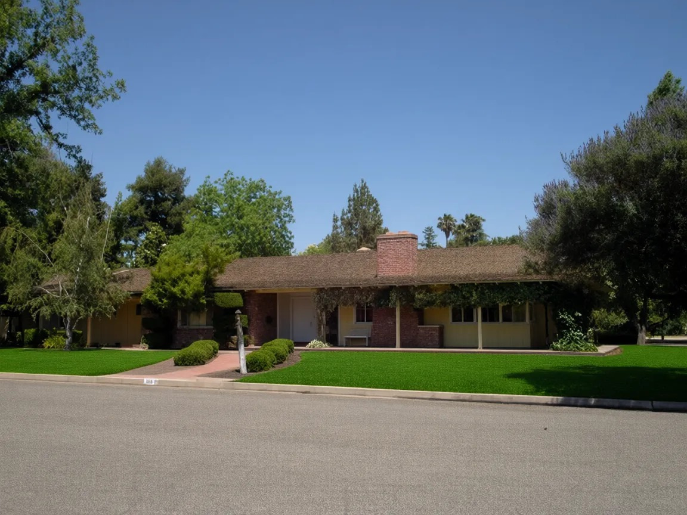

Phone-First Sales Tool · Landscape & Turf Installers
Turf Preview
Snap or upload a customer’s yard photo on site, pick one of five artificial-grass styles, and hand them a photorealistic before/after mockup with your company name and phone number burned into the share image.
Built for: Artificial-grass contractors, landscape sales reps, and estimators closing residential turf jobs.
Walkthrough
From bare or patchy lawn to a before/after slider.


Problem & solution
Homeowners struggle to picture synthetic turf on their own house.
The problem
Sample turf squares in a truck bed do not show how a full front yard will look against a homeowner’s stucco, driveway, and shade trees—slowing down estimates and follow-up closes.
How Turf Preview solves it
A zero-framework phone web app crops the photo in the browser, prompts FLUX.2 to replace only lawn and bare dirt while preserving the house and hardscape, and renders an instant slider plus branded Save/Share export.
Verified capabilities
What the code actually does.
In-browser image pipeline
- Crops uploads to valid 9:16–16:9 aspect ratios and resizes to 512px max side
- Requests a 1024px result at the original aspect ratio
- Draws the interactive before/after slider, caption bar, and disclaimer on an HTML canvas
Access-gated Worker API
- Constant-time SHA-256 comparison on the
x-access-pinheader - 3-attempt retry on transient 3043 errors, then automatic fallback to
flux-2-klein-4b - Strict 3 MB upload limit and zero server-side photo storage
Related: Light Preview
- Same phone-first Workers AI FLUX.2 pipeline built for holiday lighting dusk mockups
- Live at light-preview.kfairley9999.workers.dev ↗ (also PIN-gated)
- Can be white-labeled together with Turf Preview for multi-service crews
Honest scope
Important notes
- Preview only — actual artificial grass installation, drainage, and seam layout may vary.
- The live Cloudflare Worker requires an access PIN to protect the daily Workers AI allowance (10,000 free neurons/day, roughly 7 Best-mode or 100 Saver-mode images).
- Use the form below to request a live walkthrough or custom deployment on your own Cloudflare account.
Book a pilot
Put Turf Preview in your estimators’ hands.
Request a live walkthrough, temporary demo PIN, or custom white-label setup for your installation crew.